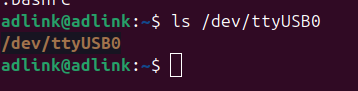
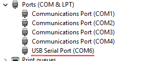
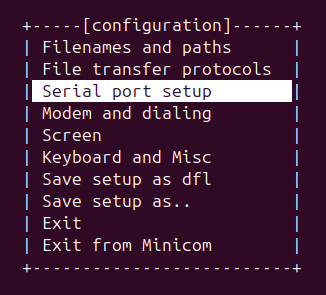
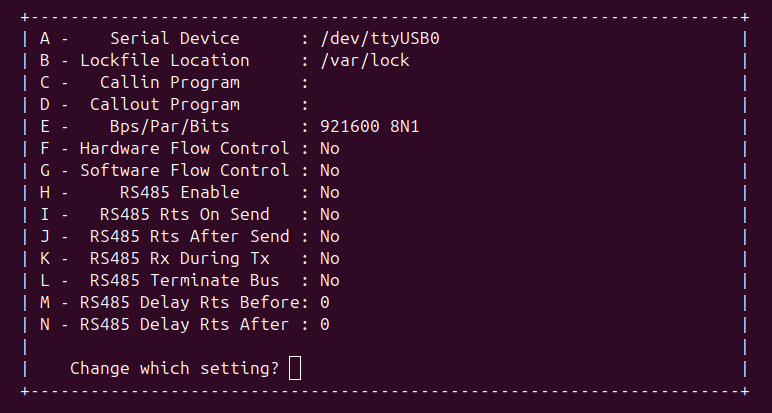
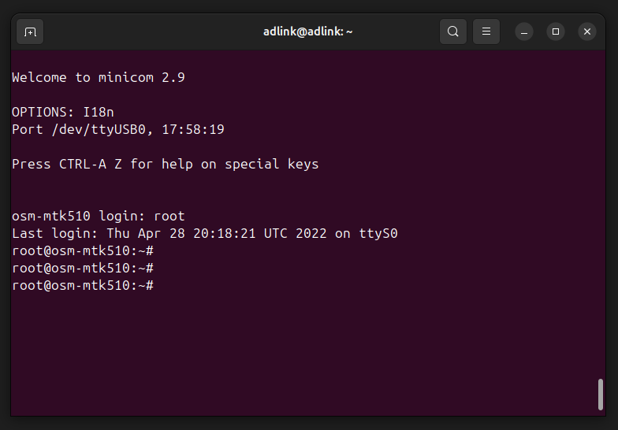
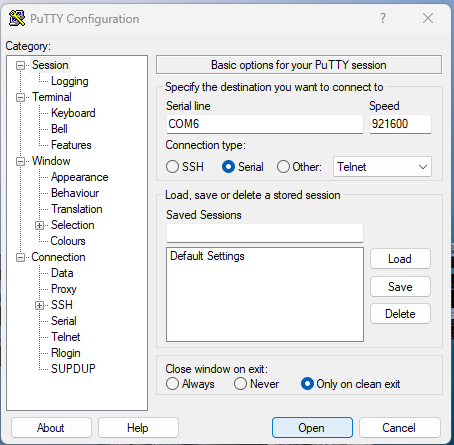
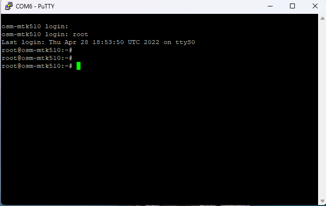

Reading Debug ConsoleThis guide explains how to connect to the OSM-MTK510 board’s serial console and read data on both Linux and Windows. Hardware SetupBoard Connectors Connector Purpose POWER Board power input FLASH USB Firmware flashing CONSOLE OUTPUT Serial console Refer to the board image below for connector locations. Connection Steps Connect the power cable to the POWER connector. Connect a USB Type-C cable from the host PC to the CONSOLE OUTPUT port. The host PC will enumerate the cable as a USB serial device: Linux: /dev/ttyUSB0 (or similar)  Windows: COMx (e.g., COM6) - visible in Device Manager  Linux Setup - MinicomInstall Minicomsudo apt install minicom Launch Minicom in Setup Modesudo minicom -s Serial Port ConfigurationOnce the configuration menu appears:  Select Serial port setup and configure as follows:  Setting Value Serial Device /dev/ttyUSB0 (match your port node) Bps/Par/Bits 921600 8N1 Hardware Flow Control No Software Flow Control No Note: Run ls /dev/ttyUSB* to confirm the correct device node if it differs from /dev/ttyUSB0. 2.Press Esc to return to the main menu. 3.Select Exit and press Enter to start the session. Reading Serial OutputMinicom will connect at 921600 baud. Power on or reset the board, boot logs and console output will appear in the terminal.  To exit Minicom: Ctrl+A → X → Enter Windows Setup - PuTTYInstall PuTTYDownload and install PuTTY from the official site: https://www.chiark.greenend.org.uk/~sgtatham/putty/latest.html Find the COM Port Open Device Manager (Win + X → Device Manager). Expand Ports (COM & LPT). Note the port listed as USB Serial Port. e.g., COM6. Configure PuTTY Open PuTTY. Set the Connection type to Serial. Configure as follows:  Setting Value Serial line COM6 (match your Device Manager port) Speed 921600 Close window on exit Only on clean exit 4.Click Open. Reading Serial OutputA terminal window will open. Power on or reset the board, boot logs and console output will appear in the terminal. 